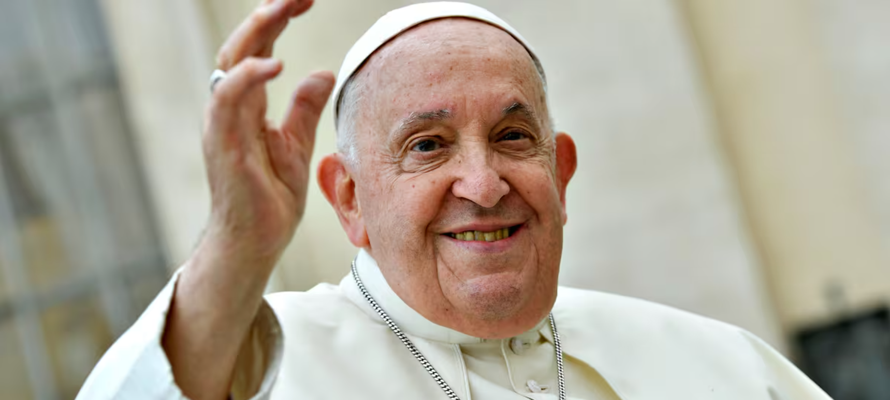

Fallecimiento del Papa Francisco
 21 de abril, 2025
21 de abril, 2025

Este lunes 21 de abril de 2025, a las 7:35 a.m. (hora local de Roma), falleció el Papa Francisco a los 88 años en su residencia de la Casa Santa Marta, en el Vaticano. La noticia fue confirmada por el cardenal Kevin Farrell, camarlengo del Vaticano, quien comunicó el deceso en un videomensaje oficial.
Según informes oficiales, el Papa Francisco había estado luchando contra una neumonía bilateral desde el 14 de febrero de 2025, lo que requirió su hospitalización en el hospital Gemelli de Roma. A pesar de una aparente recuperación, su estado de salud se deterioró en las últimas semanas, llevando a su fallecimiento.
Legado y contribuciones
Durante su pontificado, que comenzó en 2013, el Papa Francisco dejó una huella profunda en la Iglesia Católica y en el mundo. Fue el primer Papa latinoamericano y jesuita, y se destacó por su enfoque pastoral y su compromiso con los más necesitados. Promovió la inclusión de las mujeres en roles eclesiásticos, defendió la justicia social, abogó por la protección del medio ambiente y fomentó el diálogo interreligioso. Sus encíclicas "Laudato si’" y "Fratelli tutti" reflejan su visión de una Iglesia más abierta, inclusiva y comprometida con los desafíos contemporáneos
Con el fallecimiento del Papa Francisco, el Vaticano entra en un período de sede vacante. El cardenal Kevin Farrell, como camarlengo, asumirá temporalmente la administración de la Santa Sede hasta la elección de un nuevo Papa. Se espera que el Colegio Cardenalicio convoque un cónclave en las próximas semanas para elegir al sucesor.
Varios cardenales se perfilan como posibles sucesores del Papa Francisco:
Francisco, un Papa para recordar
Nacido como Jorge Mario Bergoglio el 17 de diciembre de 1936 en Buenos Aires, Argentina, el Papa Francisco fue ordenado sacerdote en 1969. Se desempeñó como arzobispo de Buenos Aires y fue creado cardenal en 2001. En 2013, tras la renuncia del Papa Benedicto XVI, fue elegido Papa, convirtiéndose en el primer pontífice latinoamericano y jesuita de la historia. Su papado se caracterizó por su cercanía con la gente, su humildad y su enfoque en la reforma de la Iglesia.
El fallecimiento del Papa Francisco marca el fin de una era de reformas y cercanía pastoral en la Iglesia Católica. Su legado perdurará en las enseñanzas y cambios que impulsó, y su sucesor tendrá la responsabilidad de continuar su visión de una Iglesia más inclusiva y comprometida con los desafíos del mundo contemporáneo.